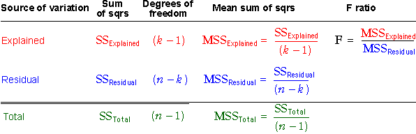

Hypotheses
Testing whether the factor affects the response involves two hypotheses. The null hypothesis is that the factor does not affect the response, and the alternative hypothesis is that there is some relationship between the factor level and the mean response. These hypotheses are expressed in terms of model parameters in different ways, depending on the type of model.
| yij = | µi | + | εij | for i = 1 to g and j = 1 to ni |
| H0 : | µi = µj | for all i and j | |
| HA : | µi ≠ µj | for at least some i, j |
| yij = | β0 + β1 xi | + | εij | for i = 1 to g and j = 1 to ni |
| H0 : | β1 = 0 |
| HA : | β1 ≠ 0 |
You should use computer software to evaluate the p-value for the test, but we will briefly describe some of the steps.
Sums of squares
A test of these hypotheses is based on the relative sizes of the explained and residual sums of squares. The table below repeats their interpretation.
| Sum of squares | Interpretation |
|---|---|
| SSTotal | Overall variability of Y, taking no account of the factor. |
| SSResidual | Describes variability within factor levels and other variation that cannot be explained by the model. |
| SSExplained | Describes the spread of fitted values and hence the variability between the treatment means that is explained by the model. |
Degrees of freedom
Each sum of squares is associated with a value called its degrees of freedom.
| Degrees of freedom |
|---|
| dfTotal = n - 1 |
| dfResidual = n - k |
| dfExplained = k - 1 |
where k is the number of parameters in the explained part of the model being used. Therefore k = g for a categorical model, k = 2 for a linear model and k = 3 for a quadratic model.
Note that the explained and residual degrees of freedom add to give the total degrees of freedom (in the same way that the corresponding sums of squares add up).
Mean sums of squares, F ratio and p-value
The first step in evaluating the p-value for the test is to divide each of the three sums of squares by its degrees of freedom to obtain a mean sum of squares.
If the factor does not affect the response, all mean sums of squares are expected to be of similar size.
The test statistic is the ratio of the explained and residual mean sums of square. It is called an F-ratio.

This test statistic compares explained and unexplained (residual) variation.
Large values of F suggest that H0 does not hold —
that the level means differ more than might be expected by chance.
The p-value for the test gives the probability of such a high F ratio if H0 is true (all treatment means are the same). It is based on a standard distribution called an F distribution and is interpreted in the same way as other p-values.
The closer the p-value to zero, the stronger the evidence that H0 does not hold.
Analysis of variance table
The calculations are usually presented in a table called an analysis of variance table. (This is often abbreviated to an anova table.)

Note here that k is the number of parameters in the model being fitted — the number of factor levels, g, for a categorical factor, 2 for a linear model and 3 for a quadratic model.
Illustration of calculations: categorical factor
The dot plots on the left below show results from a completely randomised experiment with 3 replicates at each of 4 factor levels.
The slider adjusts the relative size of the explained and unexplained variation. Observe how this affects the p-value for the test.
Use the pop-up menu to increase the number of replicates and observe that a smaller amount of explained variation is needed to obtain a small p-value (and hence strong evidence that the underlying treatment means are different).
Illustration: linear model for numerical factor
The diagram below is similar but uses a linear model for a numerical factor.
Again adjust the slider to see how the strength of the relationship affects the sums of squares and hence the p-value of the test.